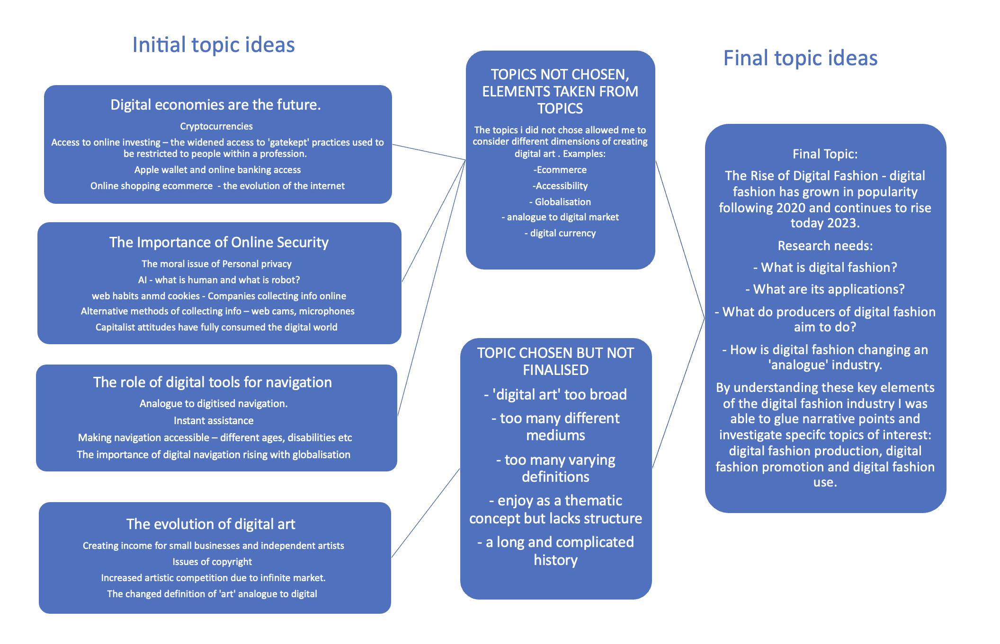

Original Findings

The production and consumption of digital fashion is a progressive practice. Efficient methods of distribution and representation may answer why there has been a significant increase in applications and platforms which promote digital fashion following the 2020 coronavirus pandemic. Today, the popularity of digital fashion applications is still rising. The future of digital fashion sees turning traditional fashion industry practices digital, increased clothing sustainability, effective promotional methods and new, creative applications in games and virtual worlds.
Digital Fashion is the creation, recreation, production, promotion and consumption of clothing built using computer technologies and 3D software.
I'm personally interested in what makes digital fashion a popular digital practice and how it is growing in popularity.
Final Site Findings
Project Topic Adaptation
| Original Ideas |
Adapted Ideas |
| “I'm personally interested in what makes digital fashion a popular digital practice and how it is growing in popularity.” |
I’m interested in how the rise in digital fashion popularity impacts consumer and retailer abilities to prevent waste and increase sustainable practices. |
| “the popularity of digital fashion applications is still rising. The future of digital fashion sees turning traditional fashion industry practices digital, increased clothing sustainability, effective promotional methods and new, creative applications in games and virtual worlds.” |
The sustainability of digital fashion includes: turning tradition fashion practices digital (manufacturing), using digitised marketing (promotion) and promoting sustainability with influencers and gamers (social media, metaverse). |
| “…concept which has its roots in video game culture and dates back to the late 1990s and early 2000s. Digital fashion was widely introuduced by purchasing ‘skins’ for video games or downloading designer clothing for avatars (Gucci x Roblox 2021).” |
The origins of digital fashion for games avatars has evolved to accommodate the digitisation of communication, with physical fashion brands creating all digital collections for games and social media. |
| “…the rise of fashion and beauty influencer culture = trying on digital clothing online
the rise of virtual reality, augmented reality, and 3D printing over the last decade = digital only clothing collections.” |
Influencer culture is a key perpetrator of accumulating fast fashion waste and the rise of virtual/augmented reality are partial solutions to this trend. |
Key Definitions
"the application of digital technology in its many forms for the production and consumption of fashion apparel and services." (Flynn, 2020)
"Digital fashion is clothing that is not physically manufactured, including game skins, avatar clothing and Non-fungible tokens." (Doyle, 2022)
"Digital fashion is a multidisciplinary field, and the technological innovations that are making it possible can be clustered under following four themes: (1) digital design and e-prototyping, (2) digital business and promotion, (3) digital human and metaverse, and (4) phygital apparel and smart wearable technology." (Muhammed Sayem et al., 2023)